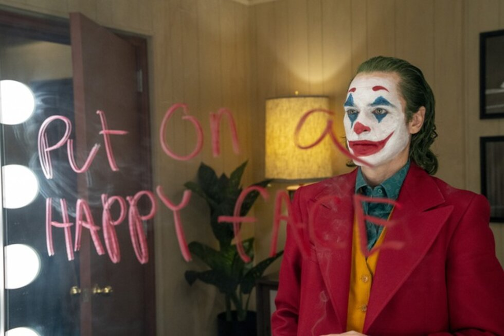
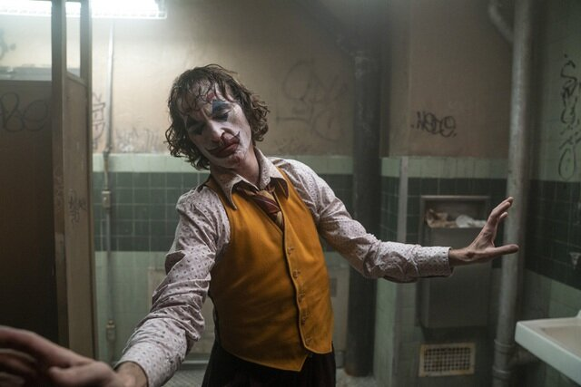
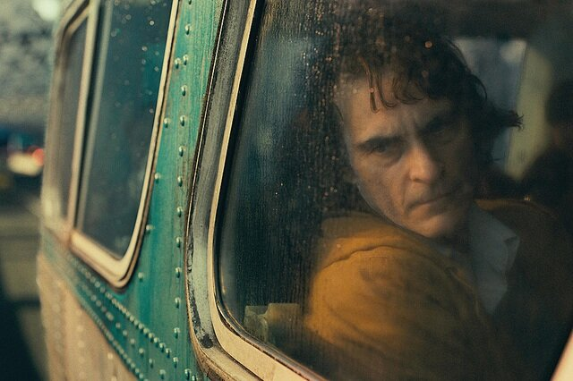
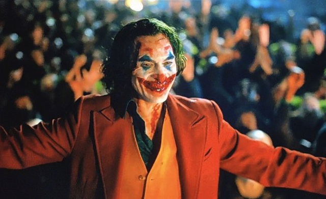
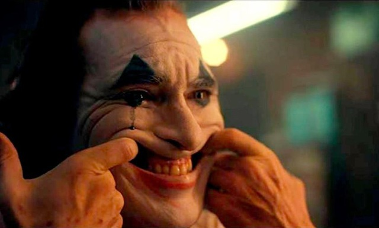
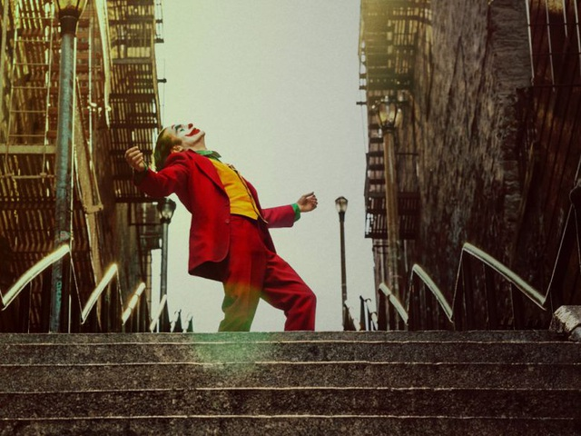

Từ một con người thất bại, vô danh, Arthur Fleck bỗng trở thành một tội phạm nguy hiểm được biết đến với biệt danh Joker, hắn kích động bạo lực và gây nên tình cảnh bất ổn, hỗn loạn.

“Joker” là một phim tâm lý giật gân của đạo diễn người Mỹ Todd Phillips
“Joker” là một phim tâm lý giật gân của đạo diễn người Mỹ Todd Phillips. Chuyện phim dựa trên những nhân vật của hãng truyện tranh DC Comics, trong phim, tài tử Joaquin Phoenix vào vai nam chính Joker, đưa lại cho người xem hình dung về quá trình tạo nên một nhân vật phản diện gây ám ảnh trên màn bạc.
Lấy bối cảnh năm 1981, chuyện phim theo chân nhân vật Arthur Fleck, một diễn viên hài thất bại trong những nỗ lực gây dựng sự nghiệp, dần dần, dưới sức nặng của những áp lực và bi kịch xảy tới trong đời sống cá nhân, người đàn ông này chìm vào điên loạn, mất trí và quyết định “trả thù đời”.
Từ một con người thất bại, vô danh, Arthur Fleck bỗng trở thành một tội phạm nguy hiểm được biết đến với biệt danh Joker, hắn kích động bạo lực và gây nên tình cảnh bất ổn, hỗn loạn trong thành phố Gotham vốn đang phải oằn mình đối diện với rất nhiều vấn đề như thất nghiệp, nghèo đói, tội phạm...
Đạo diễn Todd Phillips bắt đầu lên ý tưởng thực hiện “Joker” từ năm 2016 và dành một năm sau đó để thực hiện kịch bản cùng với các cộng sự. Bộ phim “Joker” chịu ảnh hưởng từ những bài bình phân tích tâm lý nhân vật phản diện Joker và những bộ phim của đạo diễn Martin Scorsese như “Taxi Driver” hay “The King of Comedy”.
Bộ phim dù xoay quanh một nhân vật được sáng tạo ra trước tiên trong thể loại truyện tranh nhưng kỳ thực lại không tìm nguồn cảm hứng từ bất cứ một cuốn truyện tranh nào.

“Joker” từng được công chiếu tại LHP Venice (Ý) và giành giải Sư tử vàng cao quý nhất
“Joker” từng được công chiếu tại LHP Venice (Ý) và giành giải Sư tử vàng cao quý nhất. Phim sau đó được ra rạp rộng rãi tại nhiều quốc gia và đã thành công lớn về mặt doanh thu. Với kinh phí sản xuất vào khoảng gần 70 triệu USD, phim thu về tới hơn 1 tỷ USD. Khi mới ra rạp, phim đã gây nên những sự phân cực trong giới phê bình, truyền thông và công chúng.
Bên cạnh những lời khen ngợi dành cho diễn xuất của tài tử Joaquin Phoenix, cho nhạc phim, cho nghệ thuật quay phim... được đưa ra rất nhiều; thì nội dung u ám, đen tối, cách khắc họa những chứng bệnh tâm thần, cách xử lý vấn nạn bạo lực trong phim lại làm dấy lên những lo ngại, chỉ trích.
Khi “Joker” mới ra rạp, người ta đã lo lắng rằng bộ phim u tối xoay quanh một nhân vật phản diện điên loạn sẽ làm gia tăng bạo lực trong thế giới thực, làm kích động tâm lý người xem.
Rạp chiếu phim ở thành phố Aurora, bang Colorado, Mỹ, nơi từng xảy ra vụ xả súng kinh hoàng hồi năm 2012 khi công chiếu bộ phim “The Dark Knight Rises” đã quyết định không chiếu “Joker” dù đây là phim ăn khách.
Vượt qua những sự lo ngại và tranh cãi, bộ phim đã xưng vương ngoài phòng vé, trở thành phim chiếu hạn chế đầu tiên đạt mức doanh số hơn 1 tỷ USD trong lịch sử điện ảnh. “Joker” là phim có doanh thu cao thứ 7 trong năm 2019 và đứng thứ 32 trong số những phim có doanh thu cao nhất mọi thời đại.
“Joker” nhận về vô số giải thưởng. Tại giải Oscar, phim được đề cử ở 11 hạng mục trong đó có những hạng mục quan trọng như Phim - Đạo diễn - Nam chính xuất sắc nhất.

Thời điểm đầu ra rạp, “Joker” làm dấy lên tranh cãi về những hệ lụy mà một bộ phim u tối như thế có thể gây ra
Nếu thời điểm đầu ra rạp, “Joker” làm dấy lên tranh cãi về những hệ lụy mà một bộ phim u tối như thế có thể gây ra, thì giờ đây, khi thời gian đã trôi qua, xét tới những thành công trong lĩnh vực thương mại và nghệ thuật mà phim đã đạt được, người ta sẽ dễ dàng quên đi những lo lắng, nghi ngại, tranh cãi, bởi chẳng có gì hay ho ở đó, còn bộ phim lại quá thú vị.
Càng nổ ra tranh luận, người ta càng đi xem, những người từng chần chừ ra rạp đã nhanh chóng đi xem phim sớm để biết người ta đang om sòm tranh luận về điều gì. Và khi số lượng vé bán ra trên toàn thế giới liên tục xác lập những con số doanh thu ấn tượng cho “Joker”, câu trả lời cho mọi tranh cãi xung quanh bộ phim là: Có đùa không vậy?!
Một phim đầy chất nghệ thật, tính nhân văn, sự thấm thía như “Joker” sẽ không kích động những xúc cảm bồng bột, hời hợt, nếu có bất cứ sự tiêu cực nào, thì nó chỉ khiến người xem cảm thấy chua xót cho một cuộc đời, một con người đáng sợ và đáng thương như Arthur Fleck (trước khi hắn trở thành Joker).
Bộ phim tạo cảm giác khó chịu, bất an, khổ sở một cách đầy chủ ý. “Joker” không chứa đựng tính giải trí, nó không thuộc dòng phim siêu anh hùng đang thống lĩnh thị trường.
Cho tới trước khi “Joker” được công chiếu, người ta vẫn còn có nói về mối liên hệ của nhân vật chính với siêu anh hùng Người Dơi. Nhưng kỳ thực bộ phim “Joker” tránh tất cả những mối liên hệ với các bộ phim khác từng ra mắt trước đây về nhân vật siêu anh hùng Người Dơi, tránh sự tương đồng với những cách nhập vai Joker trước đây, bởi bộ phim này rất khác biệt về mặt thể loại.

“Joker” thậm chí không nằm trong thể loại mà vốn dĩ nó thuộc về - phim chuyển thể từ nhân vật truyện tranh
“Joker” thậm chí không nằm trong thể loại mà vốn dĩ nó thuộc về - phim chuyển thể từ nhân vật truyện tranh. “Joker” là một câu chuyện nguyên bản, mới mẻ, nhiều bất ngờ, rất sáng tạo kể về một nhân vật “siêu phản diện”, đây thực sự là một chuyện phim điện ảnh thấm đẫm chất nghệ thuật, trong đó, nhân vật chính là một cái tên đã gây “ám ảnh” màn bạc từ lâu.
Sức hấp dẫn từ nhân vật này rất lớn. Joker là hiện thân của sự hỗn loạn, biểu đạt rất nhiều phong cách, vừa nhẹ nhàng vừa nặng nề, vừa hài hước vừa đáng sợ. Những tài tử nổi tiếng như Jack Nicholson, Heath Ledger, Jared Leto đều đã từng thử sức với vai diễn Joker và để lại dấu ấn của riêng họ.
Joker qua diễn xuất của Joaquin Phoenix cười rất nhiều, đủ để đảm bảo rằng chưa có diễn viên nào vào vai Joker cười nhiều và... điên dại như thế. Điểm khác biệt của nhân vật này là sự ngớ ngẩn, ngốc nghếch một cách... rất nghiêm túc đến mức khốn khổ, tội nghiệp.
Những người từng biết tới đạo diễn Todd Phillips qua những bộ phim hài hước như “The Hangover” (Ba chàng ngự lâm - 2009) hay “Road Trip” (Con đường tình dục - 2000) sẽ phải sửng sốt trước mức độ nghiêm túc trong “Joker”.
Arthur Fleck khi còn chưa trở thành Joker điên loạn là một diễn viên hài nghèo khó khao khát trở thành nghệ sĩ nổi tiếng. Nhưng thực tế mãi bủa vây Arthur Fleck là sự cô độc và khốn cùng đến mức làm sụp đổ một con người vốn đã có nhiều bất an.

Dù ước mơ lớn, nhưng Arthur Fleck chỉ có thể sống lay lắt, tạm bợ bằng việc đi làm thuê
Dù ước mơ lớn, nhưng Arthur Fleck chỉ có thể sống lay lắt, tạm bợ bằng việc đi làm thuê, nhập vai chú hề để đứng chào mời trước các cửa hàng nhỏ hoặc tham gia những sự kiện nhỏ. Arthur sống trong căn hộ nghèo nàn với người mẹ già không còn tỉnh táo. Thành phố giả tưởng Gotham City trong giai đoạn u tối ấy rất thiếu việc làm, chuột bọ khắp nơi, rác rưởi ngập phố.
Arthur Fleck chật vật trong cuộc sống ấy đã đủ khốn khổ rồi, nhưng anh ta còn bị quấy phá, bị đánh hội đồng bởi những tên du côn nơi góc phố, bởi những gã bảnh chọe say xỉn trên tàu điện ngầm. Dường như ai cũng có thể bắt nạt Arthur Fleck, hắn bị dồn nén tới cùng cực và bắt đầu nổ những phát súng đầu tiên để phản kháng lại sự xấu xa của thế giới đang bủa vây quanh mình.
Arthur Fleck dành tình cảm cho một cô hàng xóm mà anh ta tin rằng có lẽ cũng yêu thích và sẽ đáp lại tình cảm của mình, nhưng đó chỉ là do... anh ta tưởng thế mà thôi. Arthur giữ một cuốn vở ghi chép đầy những chất liệu hài mà anh ta tin rằng có thể giúp vun đắp nên sự nghiệp nghệ sĩ hài nổi danh trong tương lai.
Arthur làm việc nỗ lực điên cuồng để chuẩn bị cho những lần biểu diễn trên sân khấu, nhưng mọi cố gắng đều trở thành vô nghĩa, cuộc sống vẫn không ngừng dồn nén, xô đẩy Arthur Fleck tới mức khốn cùng cực điểm.
Cơ thể gầy gò, xoắn vặn đến đáng sợ, nhưng đôi lúc cũng đẹp đẽ đến mức sửng sốt, đó chính là khả năng nhảy múa của tài tử Joaquin Phoenix khi nhập vai Joker. Phoenix đã có những màn nhảy múa đầy ấn tượng và mang nhiều ý nghĩa biểu tượng cho từng giai đoạn phát triển tâm lý nhân vật.

Arthur Fleck là một gã cô độc thảm hại, gánh trên vai sức nặng của số phận bi kịch
Arthur Fleck là một gã cô độc thảm hại, gánh trên vai sức nặng của số phận bi kịch, là nạn nhân của hàng loạt những sự kiện dồn nén. Bệnh cười không kiểm soát của Arthur bắt đầu từ khi còn nhỏ, khi ấy, hắn đã bị cha dượng bạo hành. Sự cô độc lập dị của Arthur một phần xảy ra bởi những bất công xã hội, sự nghèo khó, xã hội xung quanh Arthur quá hỗn loạn, thiếu tình người, thiếu nhân văn... Ở đó, tất cả mọi người đều trở nên kinh khủng, mạnh ai nấy sống và thậm chí chà đạp lên nhau để sống, từ người giàu cho tới người nghèo. Sự hình thành nên Joker điên loạn và độc ác là một hệ lụy đáng buồn và đáng thương.
Sau cùng, những người từng lo ngại “Joker” sẽ kích động bạo lực hẳn đã an tâm, bởi bộ phim không ngồn ngộn năng lượng tiêu cực với vô vàn cảnh tượng bạo lực máu me khủng khiếp như người ta vẫn sợ, ngược lại, nó khiến người xem chùng xuống bởi sự khốn cùng của Arthur Fleck, đó là một bộ phim có sức nặng và chiều sâu. Nhớ lại những tranh cãi om sòm thời gian đầu phim ra mắt, người ta hẳn sẽ thấy đó giống như câu chuyện cười, còn gã hề phản diện Joker từng reo rắc bao nỗi kinh hoàng trên màn bạc giờ lại khiến người xem muốn khóc. Đó không phải là sự bào chữa, cảm thương sáo rỗng cho một kẻ phản diện tàn ác, mà là sự chua xót khi chứng kiến một số phận con người đã bị đẩy vào đường cùng. Vì thế, “Joker” là tiếng chuông cảnh tỉnh lương tri, khơi dậy lòng nhân ái, để xã hội tránh khỏi ác mộng kinh hoàng gây ra bởi những Joker.


0 comments